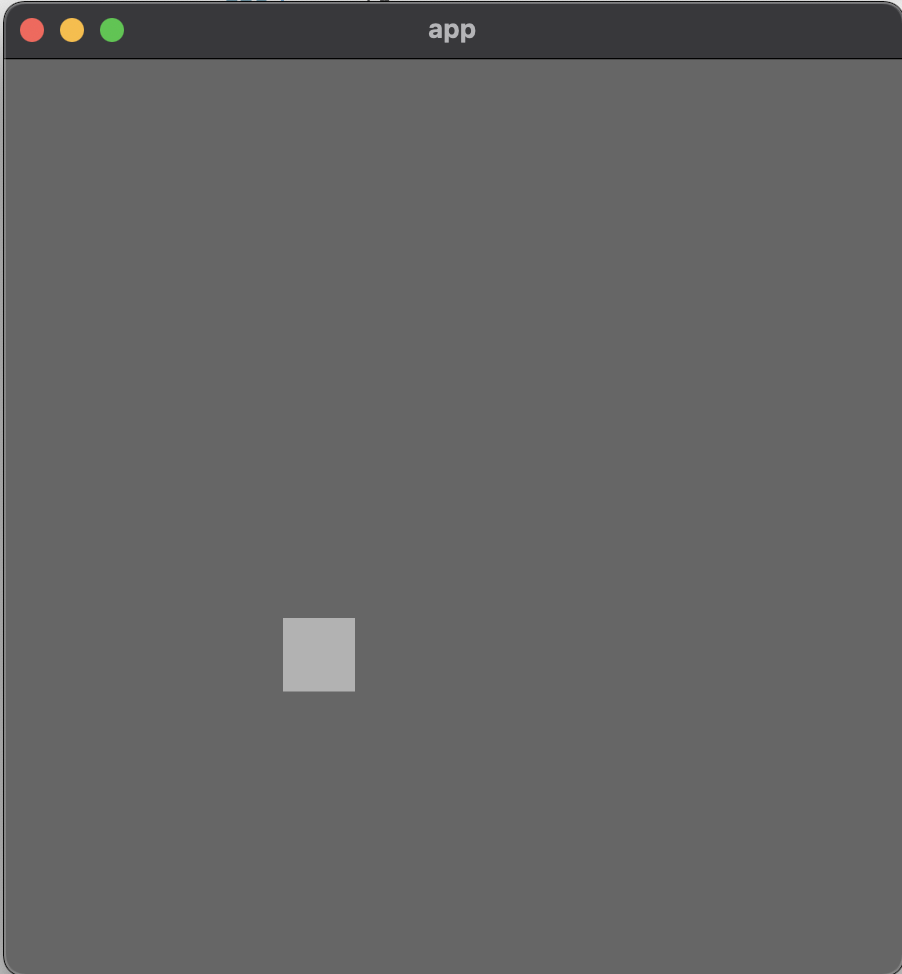

Grade de Movimento
Nosso sistema de movimentação tem utilizado coordenadas da janela para fazer a movimentação, sendo o ponto (0,0) o centro da janela e cada unidade corresponde a um pixel, porém o snake game utiliza um sistema de grade. Assim, precisamos definir uma grade básica com tamanho da grade de 10 x 10 e células da grade com mais de 1 pixel para evitar janelas de 10 px por 10 px. Além disso, definir uma grade a partir do centro é bastante complexo, por isso vamos utilizar nosso próprio sistema de coordenadas e criar um sistema que faça a conversão. Nosso primeiro passo é adicionar constantes referentes ao tamnho da arena. É importante que estas constantes sejam definidas fora, pois quando iniciarmos o modo multiplayer 10 x 10 será muito pequena.
// main.rs
mod snake;
const GRID_WIDTH: u16 = 10;
const GRID_HEIGHT: u16 = 10;
fn main() {
// ...
}
As constantes GRID_WIDTH e GRID_HEIGHT referemm a largura da arena e a altura da arena, respectivamente. Agora criamos um novo módulo components que é responsável por gerenciar componentes básicos e transversair do jogo, como posição (Position) e tamanho de célula (Size):
// main.rs
mod snake;
pub mod components;
const GRID_WIDTH: u16 = 10;
const GRID_HEIGHT: u16 = 10;
// ...
// components.rs
use bevy::prelude::Component;
#[derive(Component, Clone, Debug, PartialEq, Eq)]
pub struct Position {
pub x: i16,
pub y: i16,
}
#[derive(Component, Debug, PartialEq)]
pub struct Size {
pub width: f32,
pub height: f32,
}
impl Size {
#[must_use]
pub fn square(x: f32) -> Self {
Self {
width: x,
height: x,
}
}
}
#[cfg(test)]
mod test {
use super::*;
#[test]
fn sized_square_is_created_calling_square_fn() {
let expected = Size {width: 3.14, height: 3.14};
let actual = Size::square(3.14);
assert_eq!(actual, expected);
}
}
No arquivo de components precisamos apenas importar a trait Component e definir as structs Position com x, y e Size com width,height. O único teste presente é o sized_square_is_created_calling_square_fn pois ele testa se um quadrado de lado f é criado quando chamamos a função Size::square. Ou seja, Size::square é um método para ajudar a gerar células, ou qualquer outra coisa que tenha tamanho, de altura e largura iguais. Precisamos também usar o #[must_use] que a função precisa ser usada e evitarmos um warning no clippy. Outra coisa importante de salientar são as várias traits derivadas em Position, no futuro elas devem nos ajudar a utilizar Position. Próximo passo é incorporar estes componentes na cobra que temos:
snake.rs
#![allow(unused)] fn main() { use crate::components::{Position, Size}; use bevy::prelude::*; const SNAKE_HEAD_COLOR: Color = Color::rgb(0.7, 0.7, 0.7); #[derive(Component)] pub struct Head; pub fn spawn_system(mut commands: Commands) { commands .spawn(SpriteBundle { sprite: Sprite { color: SNAKE_HEAD_COLOR, ..default() }, transform: Transform { scale: Vec3::new(10.0, 10.0, 10.0), ..default() }, ..default() }) .insert(Head) // Remover ; .insert(Position { x: 5, y: 5 }) // <- .insert(Size::square(0.8)); // <- } }
Se executarmos os testes agora, vamos ver que não há nenhuma alteração significativa, pois todos os testes seguem passando. Agora precisamos de uma função auxiliar para gerenciar a escala de cáda célula da cobra e da grade, assim como uma função que faça a correspondência entre posição na grade e posição na janela. Vamos começar com a mais fácil, escala, que chamaremos de size_scaling. Antes, criamos um módulo chamado grid e movemos GRID_WIDTHe GRID_HEIGHT para este módulo:
// grid.rs
use bevy::prelude::*;
use bevy::{prelude::*, window::PrimaryWindow};
const GRID_WIDTH: u16 = 10;
const GRID_HEIGHT: u16 = 10;
#[allow(clippy::missing_panics_doc)]
#[allow(clippy::needless_pass_by_value)]
pub fn size_scaling(
primary_window: Query<&Window, With<PrimaryWindow>>,
mut q: Query<(&Size, &mut Transform)>,
) {
let window = primary_window.get_single().unwrap();
for (sprite_size, mut transform) in &mut q.iter_mut() {
scale_sprite(transform.as_mut(), sprite_size, window);
}
}
fn scale_sprite(transform: &mut Transform, sprite_size: &Size, window: &Window) {
transform.scale = Vec3::new(
sprite_size.width / f32::from(GRID_WIDTH) * window.width(),
sprite_size.height / f32::from(GRID_HEIGHT) * window.height(),
1.0,
);
}
#[cfg(test)]
mod test {
use bevy::window::WindowResolution;
use crate::components::Size;
use super::*;
#[test]
fn transform_has_correct_scale_for_window() {
// Setup
let expected_transform = Transform { scale: Vec3::new(20., 20., 1.,),..default() };
let mut default_transform = Transform { scale: Vec3::new(2., 3., 4.,),..default() };
let sprite_size = Size::square(1.);
// Create window
let window = Window {
resolution: WindowResolution::new(200., 200.),
..default()
};
// Apply scale
scale_sprite(&mut default_transform, &sprite_size, &window);
assert_eq!(default_transform, expected_transform);
}
}
Infelizmente, o recurso Window é bastante complicado de testar pois causa muitos problemas com o sistema de sincronização e agendamento do ECS da Bevy, por isto, neste caso não vamos testar o sistema em si, mas sim a lógica que o sistema chama, a função scale_sprite. A lógica de size_scaling é a seguinte: Se algo possui uma Size.width e uma Size.height, neste caso sprite_size.width e sprite_size.height, igual a 1.0, em uma grade de tamanho 40, em uma janela de tamanho 400 px, então a largura deveria ser 10, pois 1.0 / 40. * 400. = 10. Ou seja, para este teste, os valores iniciais de default_transform não importam, apenas os valores préconfigurados de Size, Window, GRID_WIDTHe GRID_HEIGHT.
Colocamos também #[allow(clippy::missing_panics_doc)] #[allow(clippy::needless_pass_by_value)] na função por alguns conflitos com a API atual do bevy e o clippy isso pode não ser necessário em versões futuras.
A próxima função é a responsável por transformar a posição em uma coordenada de janela, então, de novo, não poderemos testar o sistema em si, apenas os blocos lógicos que serão divididos em 2:
- Função
convertresponsável por calcular o fator de conversão de posição para window. - Aplicar a conversão ao
Transform.translation, posição na janela.
Vamos criar 2 testes para convert:
#[test]
fn convert_position_x_for_grid_width() {
let x = convert(4., 400., GRID_WIDTH as f32);
assert_eq!(x, -20.)
}
#[test]
fn convert_position_y_for_grid_height() {
let y = convert(5., 400., GRID_HEIGHT as f32);
assert_eq!(y, 20.)
}
Estes testes tem como principal objetivo, impedir mudanças que quebrem o código, assim, sua implementação é apenas:
fn convert(pos: f32, bound_window: f32, grid_side_lenght: f32) -> f32 {
let tile_size = bound_window / grid_side_lenght;
pos / grid_side_lenght * bound_window - (bound_window / 2.) + (tile_size / 2.)
}
Calculamos o tilesize como o tamanho da janela dividido pela quantidade de elementos da grade. Depois a posição passa a ser em relação à grade, algo como 5/ 10 = 0.5 multilicado pelo tamanho da window, porém como a bevy o ponto (0,0) é no centro da janela, precisamos deslocal meia janela (- (bound_window / 2.)) e centralizar o tile com + (tile_size / 2.).
Próximo passo é criar a função que executa a translação do valor do componente Position para o correspondente da posição na janela no componente Transform, como é uma função muito simples, vamos adicionar apenas um teste básico:
fn translate_position(transform: &mut Transform, pos: &Position, window: &Window) {
transform.translation = Vec3::new(
convert(f32::from(pos.x), window.width(), f32(GRID_WIDTH)),
convert(f32::from(pos.y), window.height(), f32::from(GRID_HEIGHT)),
0.0,
);
}
// mod test:
#[test]
fn translate_position_to_window() {
let position = Position {x: 2, y: 8};
let mut default_transform= Transform::default();
let expected = Transform { translation: Vec3::new(-100., 140., 0.,),..default() };
// Create window
let window = Window::new(WindowId::new(), &descriptor, 400, 400, 1., None, raw_window_handle);
let window = Window {
resolution: WindowResolution::new(400., 400.),
..default()
};
// Apply translation
translate_position(&mut default_transform, &position, &window);
assert_eq!(default_transform, expected);
}
Agora agregando tudo na função position_translation temos:
#[allow(clippy::missing_panics_doc)]
#[allow(clippy::needless_pass_by_value)]
pub fn position_translation(
primary_window: Query<&Window, With<PrimaryWindow>>,
mut q: Query<(&Position, &mut Transform)>,
) {
let window = primary_window.get_single().unwrap();
for (pos, mut transform) in &mut q.iter_mut() {
translate_position(transform.as_mut(), pos, window);
}
}
fn convert(pos: f32, bound_window: f32, grid_side_lenght: f32) -> f32 {
let tile_size = bound_window / grid_side_lenght;
pos / grid_side_lenght * bound_window - (bound_window / 2.) + (tile_size / 2.)
}
fn translate_position(transform: &mut Transform, pos: &Position, window: &Window) {
transform.translation = Vec3::new(
convert(f32::from(pos.x), window.width(), f32::from(GRID_WIDTH)),
convert(f32::from(pos.y), window.height(), f32::from(GRID_HEIGHT)),
0.0,
);
}
Próximo passo é adicionar os sistemas que criamos à função main utilizando o App::Builder. Este sistema é um caso especial, pois deve ser executado após o método update já que qualquer componente que seja adicionado no update corrente será visivel somente no próximo estágio (por exemplo PostUpdate e Draw) e as funções position_translation e size_scaling somente conseguiram ver nodos novos da cobra ou comidas nova no estágio seguinte. Esta configuração especial é representada utilizando o PostUpdate na função de adicionar sistemas add_systems:
// main
use bevy::prelude::*;
pub mod components;
pub mod grid;
mod snake;
fn main() {
App::new()
.add_systems(Startup, setup_camera)
.add_systems(Startup, snake::spawn_system)
.add_plugins(DefaultPlugins)
.add_systems(Update, snake::movement_system)
.add_systems(PostUpdate, (grid::position_translation, grid::size_scaling))
.run();
}
fn setup_camera(mut commands: Commands) {
commands.spawn(Camera2dBundle::default());
}

Corrigindo a Movimentação na Grade
Até agora nosso sistema de movimento, snake::movement_system, era baseado em movimentar o componente Transform pela janela, porém com a implementação de grade precisamos atualizar o sistema para utilizar o componente Position. Primeiro passo será atualizar os testes para utilizar Position:
#![allow(unused)] fn main() { // snake.rs #[cfg(test)] mod test { // ... #[test] fn snake_head_has_moved_up() { // Setup let mut app = App::new(); let default_position = Position { x: 5, y: 6 }; // <-- // Adicionando sistemas app.add_systems(Startup, spawn_system) .add_systems(Update, movement_system); // Adicionando inputs de `KeyCode`s let mut input = Input::<KeyCode>::default(); input.press(KeyCode::W); app.insert_resource(input); // Executando sistemas pelo menos uma vez app.update(); //Assert let mut query = app.world.query::<(&Head, &Position)>(); // <-- query.iter(&app.world).for_each(|(_head, position)| { // <-- assert_eq!(&default_position, position); // <-- }) } #[test] fn snake_head_moves_up_and_right() { // Setup let mut app = App::new(); let up_position = Position { x: 5, y: 6 }; // <-- // Adiciona systemas app.add_systems(Startup, spawn_system) .add_systems(Update, movement_system); // Testa movimento para cima let mut input = Input::<KeyCode>::default(); input.press(KeyCode::W); app.insert_resource(input); app.update(); let mut query = app.world.query::<(&Head, &Position)>(); // <-- query.iter(&app.world).for_each(|(_head, position)| { // <-- assert_eq!(position, &up_position); // <-- }); let up_right_position = Position { x: 6, y: 6 }; // <-- // Testa movimento para direita let mut input = Input::<KeyCode>::default(); input.press(KeyCode::D); app.insert_resource(input); app.update(); let mut query = app.world.query::<(&Head, &Position)>(); // <-- query.iter(&app.world).for_each(|(_head, position)| { // <-- assert_eq!(&up_right_position, position); // <-- }) } #[test] fn snake_head_moves_down_and_left() { // Setup let mut app = App::new(); let down_left_position = Position { x: 4, y: 4 }; // <-- app.add_systems(Startup, spawn_system) .add_systems(Update, movement_system); // Movimenta para baixo let mut input = Input::<KeyCode>::default(); input.press(KeyCode::S); app.insert_resource(input); app.update(); // Movimenta para esquerda let mut input = Input::<KeyCode>::default(); input.press(KeyCode::A); app.insert_resource(input); app.update(); // Assert let mut query = app.world.query::<(&Head, &Position)>(); // <-- query.iter(&app.world).for_each(|(_head, position)| { // <-- assert_eq!(&down_left_position, position); // <-- }) } } }
Como agora estamos lidando com valores inteiros, nossos testes podem verificar se a posição mudou com assert_eq! em vez de utilizar expressões lógicas com assert!. Além disso, Position inicial com o valor Position { x: 3, y: 3 }, por isso os valores são maiores que 0. Ao executarmos os testes veremos que todas as positions estão iguais a ``Position { x: 3, y: 3 }`, corrigimos isso modificando a função de input:
// snake.rs
#[allow(clippy::needless_pass_by_value)]
pub fn movement_system(
keyboard_input: Res<Input<KeyCode>>,
mut head_positions: Query<&mut Position, With<Head>>,
) {
for mut position in head_positions.iter_mut() {
if keyboard_input.pressed(KeyCode::D) {
position.x += 1;
}
if keyboard_input.pressed(KeyCode::W) {
position.y += 1;
}
if keyboard_input.pressed(KeyCode::A) {
position.x -= 1;
}
if keyboard_input.pressed(KeyCode::S) {
position.y -= 1;
}
}
}
Agora sim, movimentamos o bloco célula a célula, infelizmente muito sensivel.
Configurando a Janela
Próximo passo é fazermos com que a janela seja mais coerente com o snake game, já que por padrão a janela do snake game é quadrada enquanto a janela padrão da bevy é retangular. Para fazer isso, precisamos customizar o plugin WindowsPlugin dos plugins padrões do bevy, assim ele vai nos permitir configurar o tamanha da tela e o título da janela:
// mains.rs
fn main() {
App::new()
.add_systems(Startup, setup_camera)
.add_systems(Startup, snake::spawn_system)
.add_plugins(
DefaultPlugins
.set(WindowPlugin {
primary_window: Some(Window {
resolution: (500.0, 500.0).into(),
title: "Snake".into(),
resizable: false,
..default()
}),
..default()
})
.build(),
)
.add_systems(PostUpdate, (grid::position_translation, grid::size_scaling))
.add_systems(Update, snake::movement_system)
.add_systems(PostUpdate, (grid::position_translation, grid::size_scaling))
.run();
}
Outra mudança que pode ser interessante fazer é mudar o fundo da tela para ficar um pouco mais escuro, podemos fazer isso adicionando o recurso .insert_resource(ClearColor(Color::rgb(0.04, 0.04, 0.04))) depois do WindowDescriptor. Próximo passo é fazermos a comida aparecer.